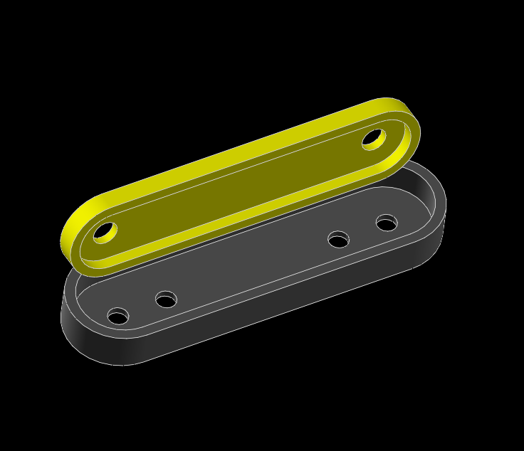

STEM <<
Previous Snap Circuits
US7144255B2: 正極串聯 PTC resettable fuse 605
US7273377B2
US8221182B2
CN2609095Y
US20190099687A1
US20190143236A1
snap_circuits_part1.7z (using Solvespace)

上列零件的金屬四合扣 (Snap Connectors) 橫跨兩個 Snap Circuits 單位，其每一個單位是採用英制 inch，採用 1.1 英吋作為一個單位距離。
上蓋 (黃色) 孔徑為 5mm，用來裝 female connector (母扣 (Socket) 結合面扣 (Cap or Button))，底座 (灰色) 孔徑為 4mm，用來裝 male connector (子扣 (Stud) 結合底扣 (Post))。
底座內側多出來的兩個 4mm 的孔，在必要時可用來頂出上蓋，查測內部的導線或電子零件的連接情形。
ESP32 轉接板：
利用一個麵包板，將 ESP32 放置中央，並將常用的引腳（例如 GPIO 2, 4, 5，以及 VCC、GND）引導到周圍的四合扣上。
行動電源 (5V) 插進 ESP32 電路板，自動透過 AMS1117-3.3 晶片將 5V 轉為工作電壓 3.3V。
L9110S 雙通道直流馬達驅動晶片與 TT 馬達:
將 L9110S 與 TT 馬達固定在同一個 3D 列印件上。對外引出 4 個四合扣： VCC（馬達電源）、GND（地線）、INA（正轉控制）、INB（反轉控制）。
4 顆三號電池正極接 VCC（馬達電源），驅動晶片 GND（地線）與 4 顆三號電池負極接到 ESP32 板的 GND。
控制馬達轉向與速度:
控制晶片的 INA (或 IA) 接到 ESP32 的 GPIO 25 (或其他具備 PWM 功能的接腳 )。
控制晶片的 INB (或 IB) 接到 ESP32 的 GPIO 26 (或其他具備 PWM 功能的接腳 )。
控制晶片的輸出端則接 TT 馬達。
紅綠燈模組:
將三個 LED 的負極（短腳）焊在一起，連接到一個「GND」四合扣。紅、黃、綠燈的正極（長腳）各接一個 220歐姆電阻（保護 LED 避免燒毀），再分別接出三個四合扣（紅、黃、綠）。
自動模式： 綠燈 5 秒 -> 黃燈 2 秒 -> 紅燈 5 秒，循環播放，讓小朋友練習開車停看聽。互動模式（行人過馬路）： 平時都是綠燈。小朋友可以按一下改裝的「行人按鈕」，系統就會觸發黃燈、紅燈，讓小車停下來，行人（或另一台車）通過。
電梯模組:
L9110S 的控制，給予 INA 與 INB 不同的高低電位（High / Low），就能決定馬達的動作：
正轉（電梯上升）： INA = HIGH (3.3V) / INB = LOW (0V)
反轉（電梯下降）： INA = LOW (0V) / INB = HIGH (3.3V)
煞車（停止）： INA = LOW / INB = LOW
如果想要電梯升降慢一點，不要用單純的 HIGH (3.3V)，改用 ESP32 的 PWM（類比輸出） 功能。例如：INA 給予 150 的速度（範圍 0-255），INB 給 0，馬達就會以大約六成的速度緩慢正轉。
微型遙控車:
ESP32-C3 SuperMini 或 Seeed Studio XIAO ESP32-C3尺寸：
約 2.2cm x 1.8cm，帶有 Wi-Fi 與藍牙。遙控方式： 小朋友可以直接用手機 App（如 Blynk）或另一台 ESP32 做的遙控器透過 ESP-NOW 無線技術來遙控這台微型車。
N20 微型直流減速馬達（3V-6V 版本）特點：
含齒輪箱長度約 2.4cm、扭力足。建議選擇轉速約 300 RPM 到 500 RPM 的規格，車子速度比較適合室內遊玩。
轉向機構: 1.7g 或 2g 微型線性舵機（Linear Servo）。
電源（動力來源）單芯鋰聚合物電池，Li-Po 3.7V，容量約 100mAh - 150mAh，鋰電池充電需搭配專用充電小板，如 TP4056。
馬達驅動晶片 MX1508 或 迷你版 L9110S（採無排針、純貼片元件的迷你版本）用來控制 N20 馬達的前進與後退。
STEM <<
Previous